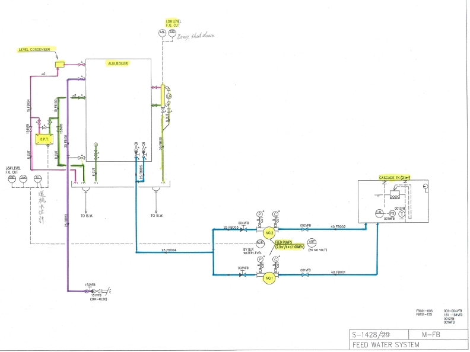

顏色圖例
藍色：淡水管路
綠色：海水管路
紅色：燃油管路
粉紅色：柴油管路
淺黃色：關鍵設備與儀錶（Key Equipment & Instruments）
黑色：艙底水、衛生水管路
灰色：空氣管路
銀色：蒸汽、排氣管路
橘色：排放線（Discharge / Drain）
藍色：給水主幹線（Main Feed Line）
綠色：旁路／支路（Bypass / Branch）
互動式管路圖（點擊顯示詳細說明）

① CASCADE TANK（階梯水槽）
② FEED PUMP NO.1（給水泵）
③ FEED PUMP NO.2（給水泵）
④ AUX. BOILER（輔鍋爐）
⑤ LEVEL CONDENSER（冷凝器/集水器）
⑥ D.F.T.（脫氣給水箱）
⑦ LOW LEVEL ALARM（低水位警報）
⑧ MAIN FEED LINE（給水主線）
⑨ TO B.W.（至鍋水迴路）
⑩ DISCHARGE VALVE（排出閥）
💡 滑鼠移至圓點顯示名稱，點擊則展開下方詳細說明；版面採白底淺灰風格。
詳細部件說明
① CASCADE TANK（階梯水槽）
作為補給水的緩衝與除氣，透過多層跌水提高溶氣逸散，減少氧腐蝕。Cascade tank for deaeration and buffer.
② 給水泵 NO.1（Feed Pump #1）
將處理後的給水送入鍋爐。通常為離心泵，需監控吸入壓力與出口壓力。
③ 給水泵 NO.2（Feed Pump #2, standby/parallel）
備用或並聯運轉以因應負荷變動與維修切換。
④ 輔鍋爐（Auxiliary Boiler）
提供船舶日常蒸汽需求。監控水位、壓力與安全閥狀況。
⑤ 冷凝器／集水器（Level Condenser）
將蒸汽冷凝為水並回收，提高循環效率。
⑥ 脫氣給水箱（D.F.T.）
利用蒸汽加熱驅除溶解氧與二氧化碳，提升鍋爐給水品質。
⑦ 低水位警報（Low Level Alarm）
水位過低會觸發警報與保護，必要時自動停爐以防乾燒。
⑧ 給水主幹線（Main Feed Line）
連接泵浦與鍋爐的主要輸送管線，通常配置止回與截止閥。
⑨ 至鍋水迴路（To B.W.）
由主幹線分流至鍋水處理與補注系統。
⑩ 排出閥（Discharge Valve）
用於放空、切換或檢修時隔離。操作前確認冷卻與壓力釋放。
船舶輔鍋爐與潤滑油系統完整解析
本章節將補充說明船舶輔鍋爐（Aux. Boiler）與主機潤滑油系統（Main Engine Lube Oil System） 的工作原理、流向、常見操作模式與巡檢要點，以協助輪機士快速建立整體系統觀念。
▶ 輔鍋爐系統（Aux. Boiler System）功能概述
包含燃燒控制、給水調節、蒸汽壓力維持、最低循環量保護、低水位停爐等。
▶ 潤滑油系統（Lube Oil System）核心流程
含LO Pump → Cooler → Filter → Main Engine → Sump回油流程，並說明各點壓力與溫度監控要求。
▶ 操作與故障模式補充
針對LO溫度過高、濾器壓差上升、輔鍋爐水位不穩、燃燒狀況不良等提供分析方向。
①～⑩ 熱點顏色分類對照說明
- ① CASCADE TANK → 藍色（淡水）
- ② FEED PUMP NO.1 → 藍色（淡水）
- ③ FEED PUMP NO.2 → 藍色（淡水）
- ④ AUX. BOILER → 銀色（蒸汽）
- ⑤ LEVEL CONDENSER → 藍色（淡水）
- ⑥ D.F.T. → 藍色（淡水）
- ⑦ LOW LEVEL ALARM → 藍色（淡水）
- ⑧ MAIN FEED LINE → 藍色（淡水）
- ⑨ TO B.W. → 藍色（淡水）
- ⑩ DISCHARGE VALVE → 藍色（淡水）
以上分類依據船舶輔鍋爐給水系統（Feed Water System）之實際流體性質判定，蒸汽相關以銀色標示，其他給水部件皆為淡水（藍色）。